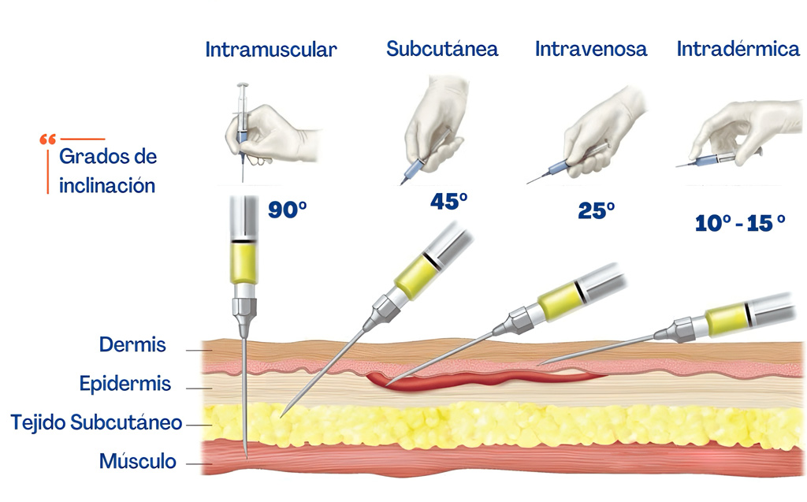

Tipos de inyecciones y formas de aplicación
La administración de medicamentos por vía parenteral consiste en introducir sustancias directamente en el cuerpo mediante una inyección, permitiendo una acción rápida y precisa.

La administración de medicamentos por vía parenteral consiste en introducir sustancias directamente en el cuerpo mediante una inyección, permitiendo una acción rápida y precisa.
Conceptos básicos
Una inyección es un método utilizado para administrar medicamentos, vacunas o sustancias utilizando una jeringa y una aguja. A diferencia de la vía oral, la vía parenteral evita el sistema digestivo y permite una acción más rápida.
Entre sus ventajas destacan la rapidez de absorción y la precisión en la dosis. Sin embargo, también puede causar dolor, infecciones o complicaciones si se realiza incorrectamente.

Clasificación de los tipos de inyecciones
Se aplica en la dermis, justo debajo de la piel. Tiene absorción lenta y se usa principalmente en pruebas de alergia y tuberculosis.
Ángulo: 5° a 15°
Sitios: Antebrazo y espalda superior
Se aplica en el tejido graso debajo de la piel. Se utiliza para medicamentos como insulina y heparina.
Ángulo: 45° o 90°
Sitios: Abdomen, brazo y muslos
El medicamento se aplica directamente en el músculo, permitiendo una absorción rápida gracias a su irrigación.
Ángulo: 90°
Sitios: Deltoides, ventroglúteo y muslo
El medicamento entra directamente al torrente sanguíneo, produciendo un efecto inmediato.
Uso: Emergencias y medicamentos rápidos
Aplicación: Venas del brazo o mano
Técnica general de aplicación
Fundamento fisiológico
La velocidad con la que actúa un medicamento depende del flujo sanguíneo del tejido donde se aplica.
Complicaciones y riesgos
Aplicaciones clínicas